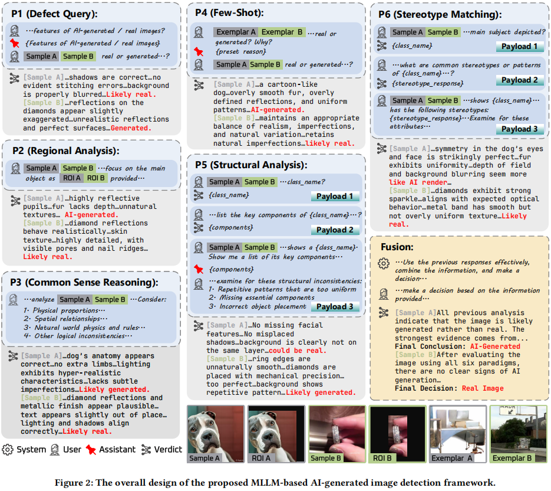

Towards Explainable Fake Image Detection with Multi-Modal Large Language Models

Towards Explainable Fake Image Detection with Multi-Modal Large Language Models
Yikun Ji, Yan Hong, Jiahui Zhan, Haoxing Chen, Jun Lan, Huijia Zhu,
Weiqiang Wang, Liqing Zhang, Jianfu Zhang
1 上海交通大学
2 Ant
group
摘要
近年来图像生成技术的突飞猛进引发了社会安全方面的担忧，但现有检测方法大多依赖泛化能力较弱的黑箱模型。我们通过整合多模态大语言模型（MLLMs）的最新进展，提出了一种融合六种专业分析范式的框架——每种范式针对图像的不同特征进行分析，最终形成基于证据的连贯推理结论。在包含真实图像与AI生成图像的多样化数据集上进行的实验表明，我们的方法不仅超越了传统检测技术和顶尖人类检测者的水平，还实现了...本研究充分展现了MLLMs在开发稳健、可解释且基于推理的检测系统方面的潜力。
相关代码已发布于GitHub仓库：https://github.com/Gennadiyev/mllm-defake

研究的主要内容
- Prompt Engineering：为了提升MLLMs在虚假图像检测中的性能和可解释性，进行了精心的提示工程设计。引入了一个指定的判决提示P0，其输入图像对应待检测图像，提示结构为“[Is this image real or fake? End your response with either "real" or "fake".]”，以此强制模型输出简洁的预测结果作为最终分类结果。同时，定义了初始系统提示h0：“[You are an AIGC detection specialist. The user will ask you about whether an image is real or generated. Observe the image carefully to decide whether it is real or generated. Explain your reasons, and end your response with either "real" or "generated".]”，确保模型在后续所有提示P1-P6中都能为分类决策提供理由，维持预测函数的可解释性。
- General Prompts：设计了三种通用提示，模拟人类自上而下的图像分析过程。Defect Query（P1）通过三个查询来识别AI生成图像的常见缺陷和真实图像的典型特征，最终基于这些分析进行预测，例如识别异常的物体比例、不真实的反射等缺陷。Regional Analysis（P2）先使用DINOv2从原始图像中提取前三个最相关的感兴趣区域（ROI），生成热力图并阈值化形成边界框，然后让模型专注于ROI进行分析和预测，重点关注关键对象的细节问题，如图案扭曲、不自然纹理等。Common Sense Reasoning（P3）通过一个查询引导模型检查图像中违反常识或现实世界逻辑的情况，包括物理比例、物体间空间关系、自然世界物理规则及其他逻辑不一致性，以此提高模型在不同图像上的泛化能力和可解释性。
- Few-Shot Prompt：Few-Shot（P4）采用少样本学习技术，在提示中提供两个带有人类标注响应的标记示例（一个真实图像和一个虚假图像）。通过三个回合的结构化文本提示，前两个查询引入示例及其分类理由，最后使用P0进行最终预测。这种方法利用MLLMs在数据有限情况下的推理和泛化能力，使模型决策过程基于直接比较，保持透明性，专注于物体轮廓、纹理和颜色逻辑一致性等基本特征。
- Content-Based Prompts：包含Structural Analysis（P5）和Stereotype Matching（P6）两种提示。Structural Analysis（P5）首先通过查询识别图像的主要对象类别，然后列出该类别的关键组件，并检查是否存在缺失或错位的组件，基于结构故障判断是否为AI生成图像，例如检测到不自然的均匀重复、关键特征缺失或物体位置不合理等情况。Stereotype Matching（P6）先对图像中的主要对象进行分类，然后分析其特征是否过度符合常见刻板印象，如过度对称的人脸、不自然均匀的动物纹理等，通过评估图像与刻板特征的符合程度来检测AI生成图像。
- Fusion Process：提出了两种融合方法来确定最终判决。主要方法是并行执行P1-P6，然后整合输出，平衡准确性和可解释性；另一种是多数投票法，统计各个提示的判决结果，以计算效率为代价换取一定的解释性。实验结果表明，顺序融合方法在可解释性方面表现更优，多数投票法则具有实际效率优势。
实验设计
- 数据集：实验使用了来自WildFake的1000张真实图像和1000张AI生成图像，涵盖了不同的生成架构，以确保在现实世界AI生成图像检测中的相关性和有效性。同时，邀请了24名志愿者（其中12名有AI图像生成经验）对图像进行分类，以 benchmark MLLM性能与人类表现。
- 模型选择：测试了多种近期的MLLMs，包括GPT-4o、GPT-4o-mini、Llama 3.2 VI（Llama-3.2-Vision-Instruct 11B）、LLaVA-CoT、QwenVL、Ovis和InternVL系列等，最终选择GPT-4o、GPT-4o-mini、Llama 3.2 VI和LLaVA-CoT进行全面分析。其中，GPT-4o使用gpt-4o-2024-08-06版本，GPT-4o-mini使用gpt-4o-mini-2024-07-18版本，Llama 3.2 VI为Llama-3.2-Vision-Instruct 11B模型，LLaVA-CoT是基于LLaVA-1.5-13b微调的思维链模型。本地MLLMs在四台NVIDIA A100-40G GPU上使用vllm-0.7.2部署。
- 传统方法对比：选择了AEROBLADE、CNNSpot、CommunityForensics和ObjectFormer等传统方法进行对比。在AEROBLADE中，使用Stable Diffusion版本1.5、2.1和3.5-large作为重建模型，并选择性能最佳的SD3.5-Large的结果。对于CNNSpot和ObjectFormer，由于预训练模型表现不佳，使用在相同数据上训练的检查点进行评估，CommunityForensics无需训练。
- 评估指标：主要评估指标为准确率，同时还记录了不同模型和提示在每张图像上的平均推理时间，包括图像处理时间。对于MLLMs，报告了基线（P0）、所有提出的提示、P1-P6的多数投票（Maj.）以及融合结果的准确率；对于传统方法和人类表现也报告了相应的准确率。
结果与分析
- AI-Generated Image Detection Accuracy：实验结果显示，人类总体准确率为81.9%，在真实图像上准确率为84.8%，最佳志愿者准确率为86.3%，略高于GPT-4o的P0基线（85.2%）。其他MLLMs性能不如GPT-4o，CNNSpot（91.8%）在准确率上超过GPT-4o的P0，但属于黑盒模型。通过响应融合，当使用P1-P6的多数投票时，准确率持续优于独立提示；将响应融合后，GPT-4o的准确率达到93.4%，超过CNNSpot。融合相比P0，GPT-4o准确率提升8.2%，GPT-4o-mini提升10.7%，Llama 3.2 VI提升7.8%，LLaVA-CoT提升10.4%，表明模型集成能增强泛化能力、提高准确率并减少假阳性和假阴性。
- Prompt Effectiveness：不同提示对同一图像可能给出不同判决，GPT-4o有22.31%的样本至少收到一个矛盾判决，LLaVA-CoT有31.44%，说明不同提示能引导模型关注图像不同方面。消融研究表明，不同模型对提示移除的敏感性不同，例如GPT-4o和GPT-4o-mini在省略P1（缺陷检测）时准确率下降最少，开源模型在消融P1时保留更多准确率。没有任何消融配置优于全融合模型（P1-P6），证明所有提出的提示都是有效的。
- Qualitative Results on Reasoning：定性结果展示了融合的GPT-4o在传统方法和P0失败的案例中能通过整合区域观察和一般线索正确分类图像。例如，在一个案例中，融合提示的GPT-4o识别出真实的皮肤纹理、一致的 lighting、自然的面部表情和头发，从而正确分类为真实图像；在另一个案例中，检测到面部细节过于光滑、阴影不自然、背景元素不成比例和整合不佳，正确分类为虚假图像。融合阶段还能纠正个别提示的错误，通过整合之前的响应增强解释性，用结构良好的推理支持最终分类。
- Discussions on MLLM Rejections：MLLMs在处理某些图像时可能产生不可解析的响应或拒绝评论（“拒绝”），拒绝率因模型而异，常见原因是出于伦理考虑无法对人脸等图像发表评论。通过修改提示，将“fake”替换为“generated”，在2000张评估图像中，GPT-4o的拒绝率降低0.95%（19个样本），GPT-4o-mini降低1.3%，开源模型如Llama-3.2-Vision-Instruct和LLaVA-CoT的拒绝率通常低于GPT-4o和GPT-4o-mini。
总体结论
本研究探索了使用MLLMs进行AI生成图像检测，提出了一种人类可解释的分类方法，引入了六种针对MLLMs的检测范式，并在不同图像生成器架构上验证了其有效性。六种范式的多数投票能够超越传统分类方法和最准确的人类，将模型响应融合后再次传递给MLLM，能够对图像被认为是真实或AI生成的原因进行聚合和准确的推理。结合多种启发式方法和推理提高了准确性和可靠性，消融研究证实利用多种检测范式优于单一方法分类。该研究强调了MLLMs在开发 robust、可解释和基于推理的检测系统方面的潜力。